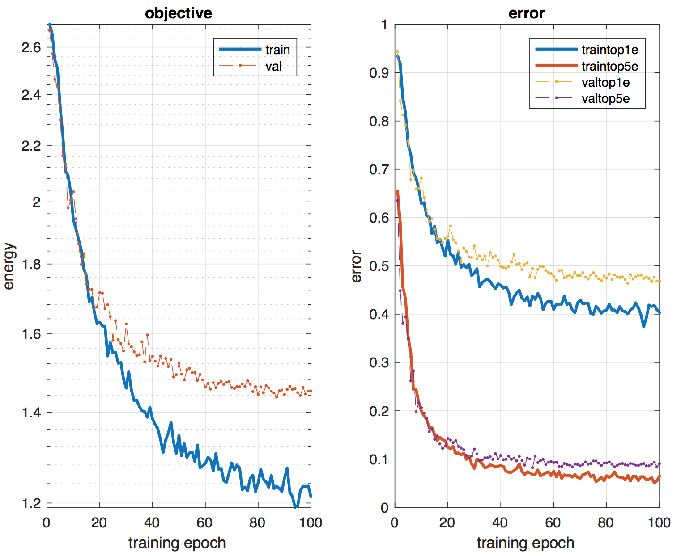
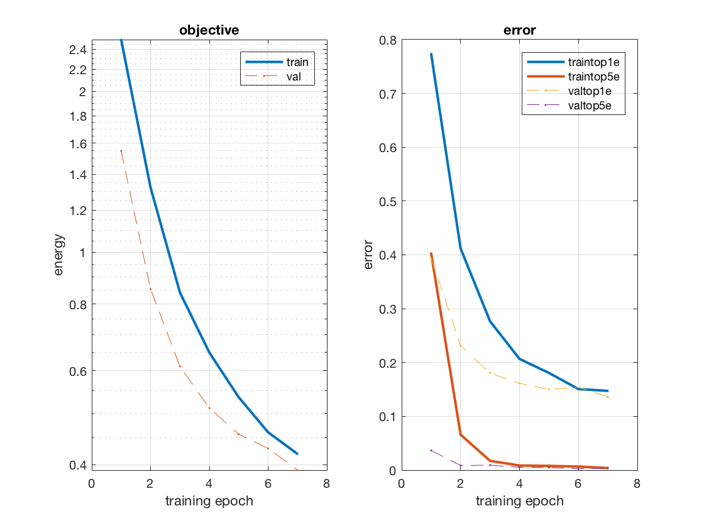
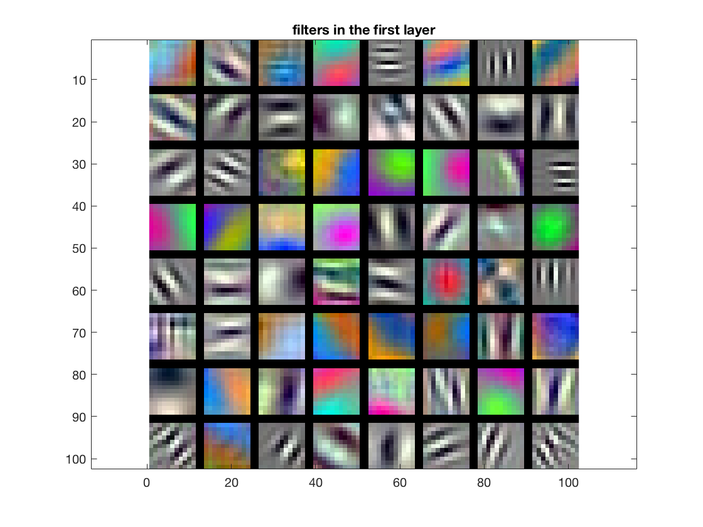

In the following project we will apply deep learning for the 15 scene classification problem. Two different methods will be tried viz. training a network from scratch and fine-tuning VGG network trained on ImageNet data.
Part1: Training a deep network from scratch.
The starter code trains a deep network from scratch on the 15 scene classification data. We will try different methods to improve the accuracy of the network.
- Jitter the data: We randomly flip the images left-right with probability half. The idea is to increase the data by using such data augmentation techniques. This makes the network more robust to such transformations which will not change the label.
- Zero-center the images: I computed the mean of all train images and subtracted it from all the images. This gave a significant boost in the accuracy.
- Regularization: Dropout is a very effective form of regularization in deep neural networks. Basically we zero out certain nodes with a probability of 0.5. This adds some stochasticity to the network reducing it's model complexity. This prevents us from overfitting to the training data.
- Deepening the network: We can improve the performance by adding an extra set of convolution, max-pool and relu layer. This gives our model more power and capability to learn a richer set of functions that model the data better. I also reduced the stride of pool1 layer to 3. I added a convolutional layer with 20 filters of size 5 × 5 followed by a pooling layer of window 3 × 3 with a stride of 2 after the first set of convolution, max-pool and relu layers. I arrived at these numbers after a bit of experimentation with different sets of values.
- Besides this I used learning rate decay and increased the number of epochs to 100. The lowest validation error obtained is 0.464
Below is the image for train, validation and test curves:

Part2: Fine-tuning VGG network
Here, we will make use of the weights learned by the VGG-F network using the ImageNet dataset. Specifically, we will remove the fc8 and softmax layer and reintroduce them with the fc8 output size of 15 instead of 1000. We will also add the missing dropout layers. Some changes to the data pre-processing is also required. Specifically we will reshape images to 224 × 224. Since, VGG-F requires color images and that we have grayscale images we will concatenate the gray-scale images repeatedly along the depth axis to make them 3 channel images. We also subtract the average image provided from all the images. I ran 7 epochs and the lowest validation error reached is 0.136.
Below is the image for train, validation and test curves:

Below is the image of filters learned by the network:
